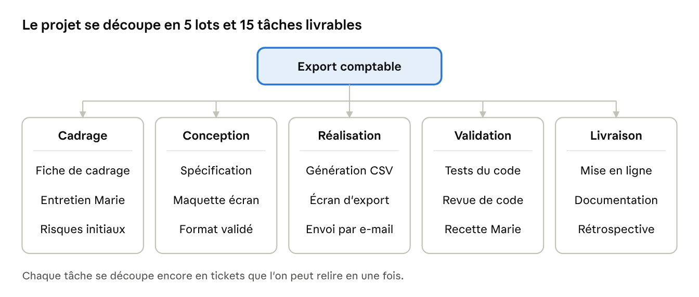
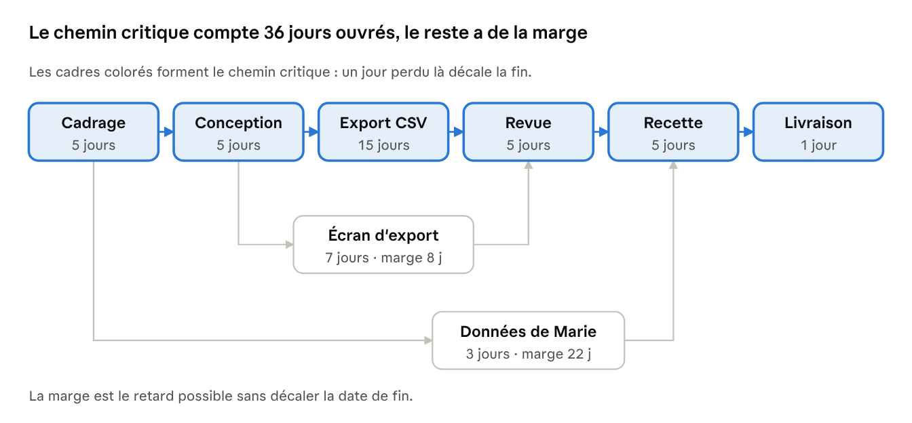
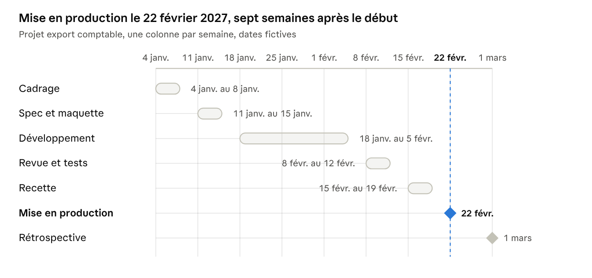
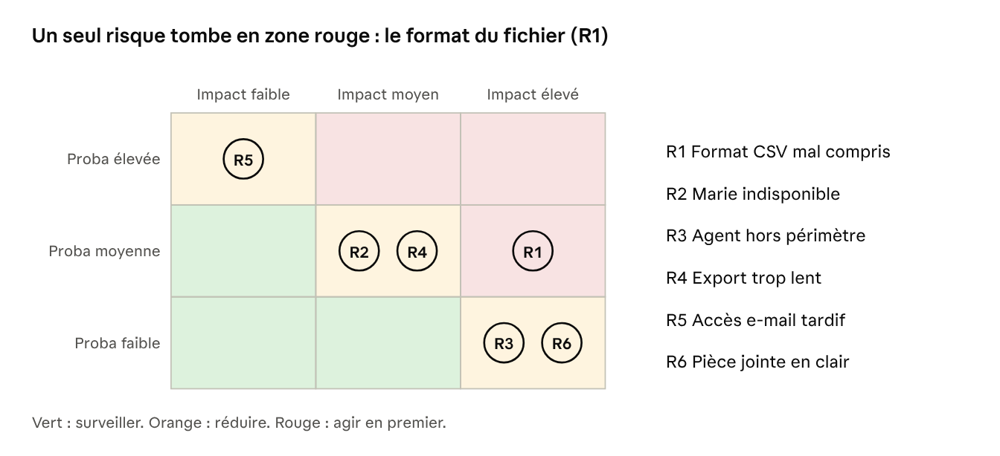

Module 10 : gestion de projet
Ce que vous saurez faire
Ce module apprend à mener un projet du premier échange avec le client jusqu'au bilan, sans perdre le contrôle du périmètre, du délai ni du budget. Un seul projet sert de fil conducteur : l'export comptable de Facturo pour Marie Giraud.
À la fin du module, vous saurez :
- reconnaître le type d'un projet et en déduire la façon de le conduire ;
- remplir une fiche de cadrage d'une page que le client peut valider ;
- découper un projet en lots et en tâches, puis repérer le chemin critique ;
- estimer en fourchettes, y compris quand des agents écrivent le code ;
- tenir un registre de risques et envoyer un rapport d'avancement honnête chaque semaine ;
- traiter une demande de changement et conduire une rétrospective chiffrée.
| Prérequis | Durée | Lien avec Facturo |
|---|---|---|
| Savoir ce qu'est une API et une pull request (modules 1 et 2 survolés) | 8 à 10 heures, réparties sur quatre semaines | On pilote la fonction « export CSV pour le comptable » de Facturo |
Le projet suivi dans ce module
Marie Giraud dirige un cabinet comptable de 12 personnes. Plusieurs de ses clients utilisent Facturo. Chaque mois, ses collaborateurs ressaisissent à la main les factures émises dans leur logiciel de comptabilité, ce qui prend environ 45 minutes par client. Elle demande un export CSV qu'ils pourront importer directement.
Tous les chiffres de ce module sont des exemples inventés pour s'entraîner. Les noms de personnes sont fictifs.
| Élément | Valeur dans l'exemple |
|---|---|
| Projet | Export comptable de Facturo |
| Client | Cabinet comptable de Marie Giraud, 12 personnes |
| Début | Lundi 4 janvier 2027 |
| Mise en production visée | Lundi 22 février 2027 |
| Budget | Forfait de 9 000 € HT |
| Équipe | Le lecteur (responsable du produit et orchestrateur), un agent de code, un agent de revue |
Leçon 10.1 : reconnaître le type de projet et le cadrer
Chaque type de projet a ses propres risques, et la façon de le conduire en découle. Avant de planifier quoi que ce soit, on se demande donc de quel genre de projet il s'agit.
Une analogie aide : construire une maison neuve, rénover une cuisine et déplacer une maison entière ne se préparent pas de la même façon. Les traiter pareil, c'est se tromper de plan dès le départ.
| Type de projet | Particularité | Risque principal | Approche conseillée |
|---|---|---|---|
| Création d'un produit neuf | Tout est à inventer, le besoin est incertain | Construire ce que personne ne veut | MVP court, retours rapides |
| Évolution d'un produit existant | Contraintes du code et des utilisateurs en place | Régressions, effets de bord | Petits changements, tests, feature flags |
| Reprise ou audit d'un code existant | Code inconnu, peu de documentation | Découvrir tard l'ampleur de la dette | Phase d'audit d'abord, puis plan chiffré |
| Refonte ou migration | Remplacer un système sans interrompre le service | Perte de fonctions ou de données | Migration par étapes, retour arrière prévu |
| Intégration ou connecteur | Dépend d'un système tiers | Contrat d'API instable, délais externes | Fichiers ou maquettes réels du tiers dès le début, plan B |
| Maintenance et support | Flux continu de petites demandes | Tout devient urgent, la dette monte | Kanban, priorités claires, temps réservé à la dette |
| Prototype ou preuve de concept | Répondre à une question, pas livrer | Le prototype part en production tel quel | Dire dès le départ qu'il sera jeté |
Un projet mené par des agents n'est pas un type à part : c'est une particularité qui s'ajoute à n'importe quel type. Le code s'écrit vite, mais la vérification repose sur un humain. Il faut donc des tâches courtes et une revue systématique.
Exemple Facturo : classer la demande de Marie
Marie Giraud écrit au lecteur : « Je voudrais juste un bouton pour exporter mes factures. » Le lecteur ne répond pas tout de suite. Il classe d'abord le projet.
- Évolution d'un produit existant : l'export lit les factures du module Facturation, qui calcule les totaux et attribue les numéros. Il ne faut rien y casser.
- Intégration : le fichier sera lu par le logiciel comptable du cabinet. Son format est imposé par un tiers.
Ce classement dit déjà quoi faire. Il faut des tests de non-régression sur la Facturation, et des fichiers d'import réels fournis par Marie avant d'écrire la moindre ligne.
La fiche de cadrage : une page, remplie en entier
Un projet mal cadré ne se rattrape pas ensuite. La fiche de cadrage tient sur une page et le client la valide avant tout développement. Voici celle de l'export comptable.
| Rubrique | Contenu pour l'export comptable |
|---|---|
| Objectif | Permettre aux collaborateurs du cabinet d'importer les factures émises du mois dans leur logiciel comptable en moins de 2 minutes, au lieu d'environ 45 minutes de ressaisie par client. |
| Périmètre inclus | Export CSV des factures au statut émise ou payée, pour une période et un client choisis. Les avoirs sont inclus, en lignes négatives. Téléchargement depuis l'écran et envoi du fichier par e-mail. |
| Hors périmètre | Export PDF. Export des devis. Connexion directe par API au logiciel comptable. Modification du modèle de facture. |
| Parties prenantes | Marie Giraud : paie, valide le périmètre et la recette. Les collaborateurs du cabinet : utilisent l'export. Le lecteur : pilote le projet. |
| Contraintes | Disponible avant la clôture comptable de février (début mars). Aucune modification des factures existantes. Données clients protégées (RGPD). Hébergement inchangé (VPS). |
| Hypothèses | Le logiciel du cabinet accepte un CSV en UTF-8 avec séparateur point-virgule (à vérifier). Marie fournit 3 fichiers d'import d'exemple avant le 8 janvier. Un export ne dépasse pas 2 000 factures. |
| Risques majeurs | Format CSV mal compris. Marie indisponible pour la recette. Export trop lent sur gros volume. Un agent modifie la Facturation. |
| Critères de réussite | Un collaborateur importe un export de 500 factures sans erreur en moins de 2 minutes. Les totaux HT, TVA et TTC du fichier correspondent à l'écran, au centime près. |
| Définition de « terminé » | Code relu, tests au vert, déployé en recette, validé par Marie, documentation d'exploitation à jour. |
Chaque hypothèse est un risque caché. Celle sur le format du fichier est la plus dangereuse : si elle est fausse, la spécification entière change. C'est pourquoi la fiche demande des fichiers d'exemple avant le 8 janvier.
Qui fait quoi : le tableau RACI
Le tableau RACI répond à la question « qui est responsable de quoi ? ». R = réalise, A = approuve (un seul par ligne), C = consulté, I = informé.
| Tâche | Marie | Le lecteur | Agent de code | Agent de revue |
|---|---|---|---|---|
| Valider le périmètre | A | R | I | I |
| Fournir les fichiers d'exemple | A/R | C | I | I |
| Écrire la spécification | C | A/R | I | C |
| Développer l'export | I | A | R | C |
| Relire le code | I | A | I | R |
| Faire la recette | A/R | C | I | I |
| Mettre en production | I | A/R | I | I |
L'agent de code ne relit jamais son propre travail : c'est la ligne la plus importante du tableau.
À retenir
- On classe le projet avant de le planifier : son type fixe ses risques.
- La fiche de cadrage tient sur une page et se valide par écrit.
- Chaque hypothèse non vérifiée est un risque à suivre.
Erreurs fréquentes
- Traiter une refonte comme une petite évolution.
- Oublier la rubrique « hors périmètre » : c'est elle qui protège le budget.
- Laisser plusieurs approbateurs sur la même ligne du tableau RACI : personne ne décide.
Leçon 10.2 : choisir la méthode de conduite
Aucune méthode n'est la meilleure en soi : le bon choix dépend du degré d'incertitude du besoin et de la liberté laissée par le contrat. Une méthode est une façon d'organiser le travail dans le temps, avec ses rituels et ses règles.
| Méthode | Principe | Convient quand | Limite |
|---|---|---|---|
| Cascade | Phases successives : besoin, conception, développement, tests, livraison | Besoin stable, contrat figé, forte contrainte réglementaire | Les erreurs de compréhension se découvrent tard |
| Scrum | Itérations courtes (sprints) avec rôles et rituels définis | Équipe stable, produit qui évolue | Les cérémonies pèsent dans une petite équipe |
| Kanban | Flux continu, limite du travail en cours | Maintenance, demandes continues | Peu de vision à long terme |
| Shape Up | Cycles de six semaines, périmètre « façonné » en amont | Petites équipes produit | Demande un bon cadrage préalable |
| Hybride | Cadrage de type cascade, réalisation par petits cycles | Client qui veut un engagement tout en itérant | Demande de la discipline pour ne pas cumuler les défauts |
Exemple Facturo : pourquoi une méthode hybride
Le lecteur passe chaque méthode au crible avec trois questions. Le besoin est-il certain ? Le contrat est-il figé ? Combien de personnes travaillent ?
- Besoin pas tout à fait certain : le format du fichier dépend du logiciel comptable. La cascade pure est donc risquée.
- Forfait de 9 000 € HT : Marie veut un engagement sur le périmètre et la date. Un pur Kanban ne lui donne pas cette visibilité.
- Une personne et deux agents : Scrum et ses réunions sont disproportionnés. Shape Up convient mal à un projet de sept semaines.
Le lecteur retient donc une méthode hybride. Elle s'organise ainsi :
- Une semaine de cadrage, qui s'achève par la fiche validée par Marie (le côté cascade).
- Des cycles d'une semaine avec une démonstration à Marie chaque vendredi (le côté itératif).
- Un tableau à trois colonnes pour suivre les tâches : à faire, en cours, à relire, terminé (le côté Kanban).
- Un point de contrôle sur le format du fichier dès la fin de la semaine 2.
À retenir
- Le choix dépend de l'incertitude du besoin et du contrat, pas de la mode.
- Une équipe d'une personne n'a pas besoin des rituels de Scrum.
- Un cadrage ferme suivi de cycles courts donne un engagement et de la souplesse.
Erreurs fréquentes
- Appliquer Scrum à la lettre sans équipe stable.
- Promettre une date ferme avec une méthode qui n'en prévoit pas.
- Cumuler les réunions de la cascade et celles des méthodes agiles.
Leçon 10.3 : découper, ordonner, planifier
Un gros projet devient gérable quand on le découpe en morceaux que l'on sait estimer, confier et vérifier. Le découpage s'appelle le WBS (Work Breakdown Structure, en français « structure de découpage du projet »). On part du résultat final, on le divise en lots, puis chaque lot en tâches.
Une bonne tâche est un livrable vérifiable : on peut dire sans ambiguïté si elle est faite ou non. « Travailler sur l'export » n'est pas une tâche. « Générer le fichier CSV d'un mois de factures » en est une.
Étape 1 : le découpage en lots
Voici le découpage de l'export comptable. Le schéma ci-dessous le montre d'un coup d'œil.

Lire le schéma
- Tout en haut, le résultat final : l'export comptable.
- Dessous, cinq lots dans l'ordre où le projet se déroule.
- Dans chaque colonne, trois tâches. Chacune produit quelque chose de vérifiable.
- Si une tâche reste floue, on la découpe encore jusqu'à ce qu'elle devienne claire.
Un lot correspond à ce que les outils de suivi appellent une epic ; une tâche devient un ticket (leçons 8.2 et 11.4).
Étape 2 : les dépendances et le chemin critique
Une dépendance, c'est une tâche qui ne peut pas commencer avant qu'une autre soit finie. On les repère pour savoir ce qui peut avancer en parallèle et ce qui bloque la suite.
Le chemin critique est la suite de tâches dont la durée fixe la date de fin du projet. Si l'une d'elles prend un jour de retard, le projet entier prend un jour de retard. Les autres tâches ont de la marge : un retard possible sans conséquence sur la date de fin.
Sur l'export comptable, la spécification attend le cadrage, et la génération du CSV attend la spécification. L'écran d'export peut avancer en parallèle. Les données de test de Marie sont nécessaires seulement pour la recette. Le schéma suivant montre l'ensemble. « Export CSV » regroupe ici la génération du fichier (12 jours) et l'envoi par e-mail (3 jours).

Lire le schéma
- La rangée du haut, en couleur, est le chemin critique : 5 + 5 + 15 + 5 + 5 + 1 = 36 jours ouvrés.
- L'écran d'export part de la conception et rejoint la revue. Il dure 7 jours pour 15 disponibles : 8 jours de marge.
- Les données de Marie sont attendues avant la recette, ce qui laisse 22 jours de marge.
- Conséquence : on surveille de près la rangée du haut, et on tolère un retard dans les deux autres.
Étape 3 : le planning daté
On pose ensuite les tâches sur un calendrier, en respectant les dépendances, les jours fériés et les disponibilités du client. Un jalon est un point de contrôle daté que l'on peut vérifier : « première version démontrable », « mise en recette », « mise en production ».
Le planning ci-dessous couvre l'export comptable. Les dates sont fictives. La revue intervient après le développement et la recette après la revue, comme le veut le chemin critique.

Lire le schéma
- Chaque ligne est une phase. La barre va du premier au dernier jour travaillé.
- Les phases s'enchaînent : aucune ne commence avant la fin de la précédente.
- Le losange et la ligne en pointillés marquent le jalon important : la mise en production le 22 février.
- La rétrospective a lieu une semaine après, quand les premiers retours des utilisateurs sont connus.
À retenir
- On découpe jusqu'à obtenir des tâches vérifiables, puis on repère celles qui forment le chemin critique.
- Un retard sur le chemin critique décale la fin ; un retard sur une tâche avec marge, non.
- Un jalon est daté et vérifiable : on peut dire s'il est atteint.
Erreurs fréquentes
- Planifier sans avoir vérifié les disponibilités du client, alors que ses validations sont sur le chemin critique.
- Mettre des tâches « flottantes » sans dépendance : on ne sait plus ce qui bloque quoi.
- Traiter toutes les tâches comme égales alors que seules quelques-unes pilotent la date.
Leçon 10.4 : estimer en fourchettes
Une estimation honnête est une fourchette accompagnée de ses hypothèses, pas une date unique. Plus l'incertitude est grande, plus la fourchette doit être large. Annoncer « 22 février » sans précision, c'est promettre ce que personne ne peut garantir.
Une méthode simple donne trois valeurs par tâche : optimiste (O, tout se passe bien), probable (P, le cas normal) et pessimiste (Pe, plusieurs petits problèmes). On calcule ensuite une valeur attendue, qui pondère le cas probable.
E = \frac{O + 4P + Pe}{6}Exemple Facturo : estimer l'export comptable
Le lecteur estime chaque tâche en jours ouvrés, en comparant avec des tâches déjà réalisées sur Facturo. Les valeurs ci-dessous intègrent déjà le travail des agents.
| Tâche | Optimiste | Probable | Pessimiste | Attendu |
|---|---|---|---|---|
| Cadrage | 3 | 5 | 7 | 5,0 |
| Spécification et maquette | 4 | 5 | 8 | 5,3 |
| Génération du CSV | 8 | 12 | 20 | 12,7 |
| Envoi par e-mail | 2 | 3 | 5 | 3,2 |
| Écran d'export (en parallèle, hors chemin critique) | 4 | 7 | 10 | 7,0 |
| Revue et tests | 3 | 5 | 8 | 5,2 |
| Recette | 3 | 5 | 8 | 5,2 |
| Mise en ligne | 1 | 1 | 2 | 1,2 |
Pour le chemin critique, on additionne les tâches qui le composent (sans l'écran d'export) :
- somme des valeurs probables : 5 + 5 + 12 + 3 + 5 + 5 + 1 = 36 jours, soit le planning de la leçon 10.3 ;
- somme des valeurs attendues : 37,8 jours, soit environ le 24 février ;
- somme des valeurs optimistes : 24 jours ; somme des pessimistes : 58 jours. Il est très improbable que tout aille mal en même temps, mais cela montre l'ampleur de l'incertitude.
Le planning à 36 jours ne laisse donc aucune marge. Le lecteur annonce à Marie une date visée (22 février) et une date au plus tard (5 mars, soit 45 jours, l'attendu plus environ une semaine de sécurité). Il lui rappelle l'hypothèse la plus fragile : les trois fichiers d'exemple doivent arriver avant le 8 janvier.
Ce qui change quand des agents écrivent le code
Les agents réduisent fortement le temps d'écriture du code, mais pas celui de la spécification, de la revue ni de la recette. Une partie du temps gagné se retrouve donc ailleurs. Voici l'exemple fictif de la tâche « génération du CSV » :
| Étape | Sans agent (jours) | Avec agents (jours) |
|---|---|---|
| Spécification détaillée et cas limites | 2 | 2 |
| Écriture du code | 8 | 2 |
| Tests et corrections | 3 | 3 |
| Revue humaine des règles (TVA, avoirs, arrondis) | 1 | 3 |
| Intégration et ajustements après revue | 2 | 2 |
| Total | 16 | 12 |
Le code est quatre fois plus rapide, mais le projet n'avance que d'un quart plus vite. La revue triple, parce qu'il y a plus de code à relire et qu'on ne l'a pas écrit soi-même. Estimer en supposant que les agents divisent tout par quatre conduit droit à un retard.
À retenir
- On annonce une fourchette, une date visée et une date au plus tard, avec les hypothèses.
- Les agents accélèrent le code, pas la compréhension du besoin ni la validation.
- Une estimation se compare ensuite au réel : c'est ainsi qu'on s'améliore.
Erreurs fréquentes
- Donner une date unique dès la première réunion.
- Demander à un agent d'estimer le projet entier : il estime l'écriture du code, pas le reste.
- Oublier de budgéter la recette, qui dépend de la disponibilité du client.
Leçon 10.5 : gérer les risques
Un risque est un événement incertain qui, s'il se produit, pénalise le projet. On ne le subit pas : on le note, on le mesure, on prévoit quoi faire, et on le relit chaque semaine. Un risque qui se réalise devient un incident.
On classe les risques selon deux questions : quelle est la probabilité qu'il arrive, et quel dommage causerait-il ? Les familles courantes sont les risques techniques (technologie inconnue), humains (départ d'une personne clé), externes (fournisseur, réglementation), de périmètre (besoin qui bouge) et de sécurité ou de données.
Exemple Facturo : le registre des risques de l'export comptable
Le registre est un tableau tenu à jour. Chaque risque a un responsable, une action pour réduire sa probabilité ou son impact, et un plan B.
| N° | Risque | Probabilité | Impact | Action pour le réduire | Plan B si ça arrive | Responsable |
|---|---|---|---|---|---|---|
| R1 | Format CSV mal compris par le logiciel comptable | Moyenne | Élevé | Obtenir 3 fichiers d'exemple avant la spécification. Tester un import à blanc dès la semaine 2. | Fournir un format générique avec un petit convertisseur | Le lecteur |
| R2 | Marie indisponible pour la recette | Moyenne | Moyen | Bloquer les dates de recette dès le cadrage. Obtenir un remplaçant désigné. | Recette par un collaborateur du cabinet, validée par écrit | Marie |
| R3 | Un agent modifie la numérotation ou le calcul des factures | Faible | Élevé | Liste de fichiers autorisés dans chaque brief. Tests de non-régression sur la Facturation. Revue humaine de tout diff hors périmètre. | Retour arrière du déploiement, restauration de la sauvegarde | Le lecteur |
| R4 | Export trop lent sur un gros volume | Moyenne | Moyen | Tester avec 2 000 factures dès la première version. | Générer le fichier en tâche de fond et l'envoyer par e-mail | Le lecteur |
| R5 | Accès au service d'envoi d'e-mails obtenu trop tard | Élevée | Faible | Demander l'accès dès la semaine 1. | Utiliser le domaine d'envoi existant de Facturo | Le lecteur |
| R6 | Données de factures envoyées en pièce jointe non chiffrée | Faible | Élevé | Envoyer un lien de téléchargement qui expire plutôt qu'une pièce jointe. | Désactiver l'envoi par e-mail et garder le téléchargement | Le lecteur |
Le schéma suivant place ces six risques dans une grille probabilité par impact.

Lire le schéma
- Les colonnes montrent l'impact (de faible à élevé), les lignes la probabilité (de faible à élevée).
- Plus on va vers le coin haut droit, plus la case est rouge : probable et grave.
- R1 est le seul risque en zone rouge : on agit avant tout le reste, en obtenant les fichiers d'exemple.
- R5 est très probable mais peu grave : on le règle par une simple demande en semaine 1.
À retenir
- Un risque a un responsable, une action pour le réduire et un plan B.
- On relit le registre chaque semaine : un risque change de case au fil du projet.
- On traite d'abord ce qui est probable et grave, pas ce qui fait le plus peur.
Erreurs fréquentes
- Remplir le registre au début et ne plus jamais l'ouvrir.
- Lister des risques vagues (« le client pourrait changer d'avis ») sans action concrète.
- Oublier les risques propres aux agents : dérive de périmètre, tests contournés.
Leçon 10.6 : piloter, rendre compte, gérer les changements
Piloter, c'est comparer chaque semaine ce qui était prévu à ce qui s'est passé, puis décider. Sans cette habitude, un retard de deux jours en devient dix avant que quelqu'un le remarque. Cette leçon a deux parties : le suivi hebdomadaire, puis la gestion d'une demande de changement.
Les rituels
Peu de rituels, mais tenus. Pour une équipe d'une personne et deux agents, quatre suffisent.
| Rituel | Quand | Durée | Contenu |
|---|---|---|---|
| Point de début de journée | Chaque matin | 5 minutes, seul | Relire le tableau, débloquer ce qui attend la revue |
| Point avec Marie | Lundi | 20 minutes | Avancement, décisions attendues, risques |
| Démonstration | Vendredi | 30 minutes | Marie voit l'application fonctionner, pas un document |
| Rétrospective | Fin de projet | 1 heure | Ce qui a marché, ce qui a coûté, ce qu'on change |
Le tableau des tâches a quatre colonnes : à faire, en cours, à relire, terminé. La colonne « à relire » est limitée à deux cartes. Quand elle est pleine, on relit avant de lancer un nouvel agent. C'est ainsi qu'on évite d'accumuler plus de code que l'on ne sait vérifier.
Les indicateurs utiles
- Reste à faire : le nombre de jours qu'il faut encore, réestimé chaque semaine. C'est le chiffre le plus honnête.
- Temps de cycle : la durée entre le début d'une tâche et sa mise à disposition. Quand il s'allonge, quelque chose bloque.
- Débit : le nombre de tâches terminées par semaine.
- Taux de retours après revue : la part de tâches renvoyées à l'agent. Un taux qui monte indique un brief trop vague.
Un ticket « presque fini » depuis trois semaines est un risque, pas un avancement. On ne compte que ce qui est terminé, relu et vérifié.
Le rapport d'avancement hebdomadaire
Le rapport se lit en deux minutes. Il suit toujours le même plan : statut, fait, à venir, risques, décisions attendues. Le statut utilise un code simple :
| Statut | Signification |
|---|---|
| Vert | Délai, budget et périmètre tenus, rien à décider |
| Orange | Un écart existe mais peut être absorbé ; une information ou une décision du client est attendue |
| Rouge | La date ou le budget sont perdus si le client ne décide pas maintenant |
Voici le rapport de la semaine 5 de l'export comptable. Les valeurs sont fictives.
Rapport d'avancement : export comptable, semaine 5 (1er au 5 février 2027)
Statut : ORANGE
Résumé : la génération du CSV est livrée avec 2 jours de retard.
La date visée passe du 22 au 24 février. La date au plus tard (5 mars) tient.
Une décision de Marie est attendue avant le 8 février.
Fait cette semaine
- Génération du CSV livrée et relue : 41 tests automatiques réussis.
- Écran d'export terminé, en cours de revue.
- Test de charge : un export de 2 000 factures se génère en 9 secondes.
Semaine prochaine
- Envoi par e-mail (3 jours), puis début de la revue finale.
Écarts
- +2 jours : le logiciel du cabinet exige une colonne « code journal »
absente de la spécification. Le risque R1 s'est réalisé en partie.
Chiffres
- Jours consommés : 34 (prévu : 32). Reste à faire : 11 (prévu : 11).
- Total estimé : 45 jours (plan initial : 43), forfait de 9 000 € HT inchangé.
Risques
- R1 (format CSV) : réalisé en partie, maintenant maîtrisé.
- R4 (export lent) : passé au vert après le test de charge.
Décisions attendues de Marie
- Choisir le code journal par défaut avant le lundi 8 février.
- Accepter la date visée du 24 février.Ce rapport est orange et non rouge, car la date au plus tard n'est pas menacée. Un rapport vert alors qu'un écart existe serait malhonnête. Un rapport rouge pour deux jours « alarme » le client pour rien. Dans les deux cas, il perd confiance en la couleur.
Traiter une demande de changement, de A à Z
Un changement de périmètre n'est pas un problème : le problème, c'est de l'accepter sans en mesurer le prix. Le triangle périmètre, délai, coût le rappelle : on ne peut pas ajouter d'un côté sans payer de l'autre. Quand des demandes s'accumulent sans être chiffrées, on parle de dérive de périmètre (scope creep en anglais).
Le vendredi 5 février, pendant la démonstration, Marie dit : « C'est super. Vous pourriez ajouter la même chose en PDF pour mes clients ? » Le lecteur ne répond ni oui ni non. Il applique la méthode en sept étapes.
- Noter la demande par écrit, telle qu'elle est dite, sans promettre.
- La comparer à la fiche de cadrage : le PDF est dans la rubrique « hors périmètre ».
- Comprendre le besoin réel avec les cinq pourquoi (voir ci-dessous).
- Chiffrer le délai, le coût et le risque de chaque façon de répondre.
- Proposer deux ou trois options et recommander l'une d'elles.
- Obtenir la décision écrite du client.
- Mettre à jour la fiche, le planning, le budget et le journal des changements.
La fiche de demande de changement remplie
| Rubrique | Contenu |
|---|---|
| Numéro et date | Changement n°1, vendredi 5 février 2027 |
| Demandeur | Marie Giraud, pendant la démonstration hebdomadaire |
| Demande | Ajouter un export PDF des mêmes factures |
| Position par rapport à la fiche | Hors périmètre : l'export PDF est exclu dans la fiche de cadrage validée |
| Besoin réel | Pourquoi un PDF ? Pour envoyer un récapitulatif à certains clients du cabinet. Pourquoi pas le CSV ? Il est illisible pour quelqu'un qui n'est pas comptable. Le besoin est donc un récapitulatif lisible, pas un export comptable. |
| Impact | Voir les trois options ci-dessous |
| Recommandation | Option C |
| Décision du client | À remplir par Marie, par écrit |
Les trois options, chiffrées sur la base d'un jour de travail à environ 210 € HT (9 000 € divisés par 43 jours) :
| Option | Ce qu'on fait | Impact sur le délai | Impact sur le coût | Risque |
|---|---|---|---|---|
| A. Ajouter maintenant | PDF en plus de tout le reste | +4 jours : mise en production le mardi 2 mars | +840 € HT | La marge disparaît, la date au plus tard passe au 11 mars, après la clôture de Marie |
| B. Remplacer | PDF à la place de l'envoi par e-mail (3 jours retirés, 4 ajoutés) | +1 jour : le jeudi 25 février | +210 € HT | Marie perd l'envoi par e-mail qu'elle avait demandé |
| C. Reporter | PDF dans une version 2, planifiée après la mise en production | 0 jour | 0 € sur ce projet, 840 € HT pour la version 2 | Marie attend le PDF quelques semaines |
Le lecteur recommande l'option C. Marie a besoin du CSV pour la clôture de février : c'est l'objectif de la fiche. Le PDF répond à un autre besoin, utile mais moins urgent. Y toucher maintenant ferait disparaître la marge sur le chemin critique.
Marie choisit l'option C par écrit le lundi 8 février. Le lecteur met à jour la fiche de cadrage (le PDF reste hors périmètre, avec une note « version 2 »), ajoute au backlog « export PDF récapitulatif, 4 jours », et inscrit le changement dans le journal avec sa décision. Planning et budget restent inchangés.
À retenir
- Un rapport hebdomadaire a toujours le même plan : statut, fait, à venir, risques, décisions.
- Toute demande hors fiche passe par une fiche de changement chiffrée et une décision écrite.
- « Pas dans cette version » est une réponse acceptable, tant qu'on propose une suite.
Erreurs fréquentes
- Dire oui pendant la démonstration pour faire plaisir, puis chiffrer après.
- Chiffrer le délai mais pas la perte de marge.
- Garder la décision à l'oral : elle doit pouvoir être retrouvée.
Leçon 10.7 : clôturer et apprendre
Un projet n'est pas fini quand le code est en ligne : il l'est quand le client a validé, que l'exploitation est organisée et que l'équipe a tiré les leçons. Cette dernière étape est souvent sautée, alors que c'est elle qui améliore le projet suivant.
La recette et la livraison
La recette est la validation par le client, selon les critères écrits dans la fiche de cadrage. On la formalise par un procès-verbal signé. Voici celui de l'export comptable.
| Critère de la fiche | Résultat constaté | Verdict |
|---|---|---|
| Import de 500 factures sans erreur | Import réussi, 500 factures sur 500 | Conforme |
| Import en moins de 2 minutes | 1 minute 20 secondes | Conforme |
| Totaux HT, TVA, TTC identiques à l'écran | Écart de 0,00 € sur les trois totaux | Conforme |
| Avoirs exportés en lignes négatives | 3 avoirs de test, montants négatifs corrects | Conforme |
Réserves : 6 corrections mineures de libellés, traitées avant la mise en production. Signé par Marie Giraud.
La livraison comprend la mise en production, mais aussi ce qui permet de vivre avec : documentation d'exploitation, accès remis, sauvegardes vérifiées, et le passage en maintenance. Pour ce dernier point, on précise qui répond en cas d'incident et sous quel délai (par exemple : incident bloquant, réponse sous 4 heures ouvrées).
La rétrospective
La rétrospective est une réunion d'une heure où l'on regarde les faits, sans chercher de coupable. On part des chiffres, on classe ce qu'on a observé, puis on décide d'actions précises avec un responsable et une échéance.
Les faits relevés sur l'export comptable
- Les 3 fichiers d'exemple de Marie sont arrivés le 11 janvier, 3 jours après la date prévue : la spécification a démarré avec un jour de retard.
- La liste de fichiers autorisés a permis de détecter et de refuser 2 modifications hors périmètre d'un agent de code.
- La recette a duré 5 jours, menée par 2 collaborateurs : aucune anomalie bloquante, 6 corrections mineures.
- Le coût des agents a été de 310 € de jetons, pour 250 € prévus.
| Continuer | Arrêter | Commencer |
|---|---|---|
| La liste de fichiers autorisés dans chaque brief | Démarrer la spécification sans avoir les fichiers d'exemple | Mettre les fichiers d'exemple comme condition de démarrage dans la fiche |
| La démonstration du vendredi | Estimer la revue à la même durée que l'écriture | Ajouter 20 % à l'estimation de la revue |
| Le rapport de deux minutes | Faire valider les cas limites par Marie avant le développement |
| Action | Responsable | Échéance |
|---|---|---|
| Ajouter « fichiers d'exemple reçus » comme condition de démarrage dans le modèle de fiche | Le lecteur | 5 mars 2027 |
| Mettre à jour la grille d'estimation avec +20 % sur la revue | Le lecteur | 5 mars 2027 |
| Préparer la liste des cas limites à faire valider à Marie | Le lecteur | Avant le prochain projet |
Le bilan chiffré : estimé contre réel
Le bilan compare ce qu'on avait estimé à ce qui s'est passé. C'est la meilleure source de progrès, parce qu'il corrige ses propres habitudes d'estimation.
| Tâche | Estimé (probable, en jours) | Réel (en jours) | Écart |
|---|---|---|---|
| Cadrage | 5 | 5 | 0 |
| Spécification et maquette | 5 | 6 | +1 |
| Génération du CSV | 12 | 14 | +2 |
| Envoi par e-mail | 3 | 2 | -1 |
| Écran d'export | 7 | 8 | +1 |
| Revue et tests | 5 | 6 | +1 |
| Recette | 5 | 5 | 0 |
| Mise en ligne | 1 | 1 | 0 |
| Total | 43 | 47 | +4 (+9 %) |
La mise en production a eu lieu le jeudi 25 février 2027, trois jours ouvrés après la date visée et six jours avant la date au plus tard. Le forfait de 9 000 € HT n'a pas bougé. Le coût interne a augmenté de 9 % environ.
Deux leçons ressortent. Le retard vient surtout de l'attente des fichiers du client et de la revue, pas du code. Et la fourchette annoncée (22 février au plus tôt, 5 mars au plus tard) a bien tenu : le projet est resté dedans.
À retenir
- Un projet se clôt par une recette signée, une livraison complète et un passage en maintenance organisé.
- La rétrospective part des faits et finit par des actions avec responsable et échéance.
- Le bilan estimé contre réel améliore les estimations suivantes.
Erreurs fréquentes
- Passer directement au projet suivant sans rétrospective.
- Chercher un coupable au lieu de comprendre le processus.
- Noter des actions sans responsable ni date : personne ne les fait.
Atelier guidé : cadrer et planifier l'export des devis
Cet atelier reprend toute la méthode sur un nouveau projet de Facturo. Prévoyez environ deux heures et un tableur ou un document vide.
La demande de Marie Giraud : « Je voudrais aussi exporter mes devis acceptés en CSV, avant le 30 avril 2027. Mon budget est de 4 000 € HT. »
| Étape | Ce que vous faites | Résultat attendu |
|---|---|---|
| 1 | Classez le projet selon la table de la leçon 10.1 | Une phrase de classement (par exemple : évolution d'un produit existant et intégration) et deux risques typiques |
| 2 | Remplissez la fiche de cadrage en neuf rubriques | Une page, avec au moins 3 hypothèses à vérifier et une rubrique « hors périmètre » non vide |
| 3 | Dressez le tableau RACI sur 5 tâches | Un seul A par ligne ; l'agent de code n'est jamais celui qui relit |
| 4 | Découpez en 4 lots et 10 à 12 tâches | Un arbre dont chaque tâche est un livrable vérifiable |
| 5 | Estimez chaque tâche avec trois valeurs et calculez la valeur attendue | Un tableau, et une fourchette globale en jours |
| 6 | Dessinez les dépendances et repérez le chemin critique | Une suite de tâches soulignée, avec la marge des autres |
| 7 | Posez le tout sur un calendrier | Une date visée et une date au plus tard, avant le 30 avril |
| 8 | Remplissez le registre des risques avec 5 risques | Chacun a une action, un plan B et un responsable ; au moins un risque lié aux agents |
| 9 | Rédigez le rapport d'avancement de la première semaine (inventez les faits) | Un rapport de deux minutes, avec un statut et une décision attendue |
Contrôlez votre travail avec une question : un lecteur qui n'a jamais vu le projet saurait-il, en lisant votre fiche, ce qui sera livré, ce qui ne le sera pas, et à quelle date ?
Exercices
Exercice 1 : classer quatre demandes
Indiquez le type de projet, le risque principal et l'approche pour chaque demande.
a. Remplacer le fournisseur de paiement de Facturo sans interrompre les paiements. b. Brancher Facturo à l'API d'un logiciel de comptabilité. c. Répondre chaque jour aux petites demandes des utilisateurs (mot de passe oublié, correction mineure). d. Tester en deux semaines si des clients paieraient pour des rappels d'impayés par SMS.
Corrigé
| Demande | Type | Risque principal | Approche |
|---|---|---|---|
| a | Refonte ou migration | Perdre des paiements ou des données pendant le changement | Migration par étapes, double fonctionnement un temps, retour arrière testé |
| b | Intégration | Contrat d'API instable, délais externes | Obtenir la documentation et un bac à sable du tiers dès le début, tests de contrat, plan B |
| c | Maintenance et support | Tout devient urgent, la dette monte | Kanban, priorités claires, une part du temps réservée à la dette |
| d | Prototype ou preuve de concept | Le prototype part en production tel quel | Dire dès le départ qu'il sera jeté, fixer le critère qui décidera de la suite |
Exercice 2 : transformer une demande vague en cadrage
Un client écrit : « Il nous faudrait un tableau de bord des impayés. » Listez les questions à poser, puis rédigez un objectif mesurable et une rubrique « hors périmètre ».
Corrigé
Questions utiles, classées par thème :
- Objectif : qu'allez-vous décider grâce à ce tableau ? Qui le regarde, à quel rythme ?
- Contenu : qu'appelez-vous impayé (échéance dépassée d'un jour ? de trente ?) ? Quels montants et quels clients voulez-vous voir ?
- Contraintes : pour quand ? Qui peut y accéder ? Des données sensibles sont-elles concernées ?
- Alternative : comment le suivez-vous aujourd'hui, et que ne pouvez-vous pas faire ?
Objectif mesurable possible : « Permettre à la direction de voir en moins d'une minute la liste des factures émises dont l'échéance est dépassée de plus de 30 jours, pour relancer les clients concernés chaque lundi. »
Hors périmètre possible : envoi automatique des relances, prévisions de trésorerie, export vers un autre logiciel.
Ce qui compte dans le corrigé : l'objectif nomme une décision (relancer) et un seuil (30 jours), et l'on sait ce qu'on ne fera pas.
Exercice 3 : trouver le chemin critique
Quatre tâches : A (3 jours) puis B (5 jours) et C (8 jours) en parallèle après A, puis D (2 jours) qui exige B et C. Quelle est la durée minimale, et quelle marge a B ?
Corrigé
Le chemin A, C, D dure 3 + 8 + 2 = 13 jours. Le chemin A, B, D dure 3 + 5 + 2 = 10 jours. Le chemin critique est donc A, C, D : 13 jours. B a 3 jours de marge, car elle peut glisser de 3 jours sans retarder D. Si C prend 2 jours de plus, la fin recule de 2 jours.
Exercice 4 : écrire un rapport d'avancement
Faits bruts : 20 jours consommés sur 43 prévus, 18 jours de travail réellement achevés, une API de paiement tierce en panne depuis 3 jours, une demande de changement non tranchée. Rédigez un rapport de cinq lignes.
Corrigé
Statut : ORANGE. Avancement : 18 jours réalisés pour 20 consommés, soit 2 jours de retard. Risque : l'API tierce est en panne depuis 3 jours ; sans retour d'ici jeudi, la date visée recule d'une semaine. Décision attendue : trancher la demande de changement avant vendredi, car elle ajoute environ 3 jours. Prochaine étape : continuer le travail sans dépendre de l'API, avec une simulation.
Ce qui compte : un statut, un chiffre, un risque daté, une décision. Pas de récit de la semaine.
Exercice 5 : traiter une demande de changement
A mi-projet, le client demande d'ajouter un second format d'export (Excel). Le projet est à prix fixe. Indiquez les trois options à lui présenter et ce que vous recommandez.
Corrigé
Option A : l'ajouter maintenant, avec un avenant (coût estimé en jours, nouvelle date). Option B : le livrer après la première mise en ligne, dans un lot séparé. Option C : refuser, car cela sort du périmètre signé.
Recommandation habituelle : B, car elle protège la date initiale et répond au besoin. Elle exige tout de même de mesurer le coût (par exemple 3 jours) et de faire valider la décision à écrit.
Quiz d'auto-évaluation
- Quelle rubrique de la fiche de cadrage évite le plus de conflits ?
- Pourquoi estimer en fourchette ?
- Qu'est-ce que le chemin critique ?
- Qui doit relire le code produit par l'agent de code ?
- Que faire d'une demande hors périmètre en cours de projet ?
- Que contient une bonne rétrospective ?
Voir les réponses (après avoir répondu aux six questions)
| Question | Réponse | Pourquoi |
|---|---|---|
| Quelle rubrique de la fiche de cadrage évite le plus de conflits ? | Le hors périmètre | Ce qui est exclu est écrit, donc discutable avant et non après |
| Pourquoi estimer en fourchette ? | Une seule valeur cache l'incertitude | La fourchette dit à quel point on est sûr, et permet de choisir une date avec marge |
| Qu'est-ce que le chemin critique ? | La suite de tâches qui fixe la durée minimale | Tout retard dessus retarde le projet ; les autres tâches ont de la marge |
| Qui doit relire le code produit par l'agent de code ? | Une personne ou un agent de revue distinct, sous la responsabilité du lecteur | L'auteur ne se contrôle pas lui-même, et la responsabilité reste humaine |
| Que faire d'une demande hors périmètre en cours de projet ? | La chiffrer et présenter des options avec leur effet sur le délai et le prix | Le client choisit en connaissance de cause, et la trace écrite protège les deux parties |
| Que contient une bonne rétrospective ? | Des faits, des actions avec responsable et date, et l'écart estimé contre réel | Sans actions suivies, rien ne change ; sans écart mesuré, les estimations ne s'améliorent pas |
Checklist de validation
Cochez chaque ligne quand vous pouvez le prouver avec un document.
- Je classe un projet par type et j'en déduis ses risques typiques.
- Je remplis une fiche de cadrage avec objectif mesurable, hors périmètre et hypothèses.
- Je choisis une méthode (cascade, agile, hybride, Kanban) et je justifie ce choix en trois phrases.
- Je découpe un projet en lots et tâches livrables, et je repère le chemin critique.
- J'estime en fourchette et je donne une date visée et une date au plus tard.
- Je tiens un registre de risques avec action, plan B et responsable, dont un risque lié aux agents.
- J'écris un rapport d'avancement honnête avec statut et décision attendue.
- Je traite une demande de changement avec options chiffrées et validation écrite.
- Je conduis une rétrospective et je compare estimé et réel.
Sources
Pages consultées le 16 novembre 2026. Les dates sont celles affichées sur les pages.
- The 2020 Scrum Guide, ScrumGuides.org (aucune date affichée) : « Scrum is a lightweight framework that helps people, teams and organizations generate value » : leçon 10.2.
- The Kanban Guide, Kanban Guides (1er mai 2025) : « Kanban system members must explicitly control the number of work items in a workflow from started to finished. »
- Waterfall model, Wikipédia (source secondaire) (dernière modification le 27 octobre 2026) : phases du cycle de développement réalisées dans l'ordre ; la page porte un bandeau « This article needs to be updated ».
- Critical path method, Wikipédia (source secondaire) (dernière modification le 2 octobre 2026) : « the longest stretch of dependent activities » : le chemin critique de la leçon 10.3.
- Responsibility assignment matrix, Wikipédia (source secondaire) (dernière modification le 23 juillet 2026) : la matrice RACI de la leçon 10.1.
Non sourcés : la fiche de cadrage en une page, la méthode hybride, l'estimation en fourchettes, le registre des risques et le rapport d'avancement sont des repères de ce cours. Ce que change l'écriture du code par des agents (leçon 10.4) relève de l'expérience, pas d'une étude. Tous les chiffres, durées et noms sont fictifs.